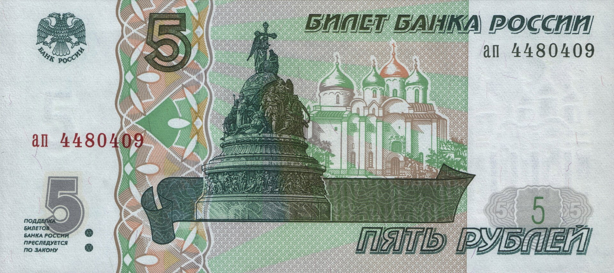

Путин ограничил вывоз наличных рублей из России; Узбекистан — в списке
По новому указу физлицо не может вывезти из России более 1 млн рублей (около $12 300) наличными в Узбекистан, Таджикистан, Азербайджан и страны ЕАЭС; для юрлиц вывоз наличных рублей запрещён независимо от суммы.

Президент России Владимир Путин подписал указ, ограничивающий вывоз наличных рублей из страны. Документ вступил в силу в день подписания, 29 сентября.
Новое правило
Согласно указу, физическое лицо не может вывезти из России более 1 млн рублей (около $12 300) наличными в государства — члены Евразийского экономического союза, Азербайджан, Таджикистан и Узбекистан. Для юридических лиц и индивидуальных предпринимателей вывоз наличных рублей в эти страны запрещён независимо от суммы.
Есть исключение: физлицо может вывезти свыше 1 млн рублей наличными через международные пункты пропуска в аэропортах при наличии банковской справки на всю сумму. Деньги, снятые с собственного счёта, также освобождаются.
Что изменилось
Ранее порог для физических лиц был значительно выше — около $100 000, — а Азербайджан, Таджикистан и Узбекистан под ограничение не подпадали. Новый указ добавил в список именно эти страны.